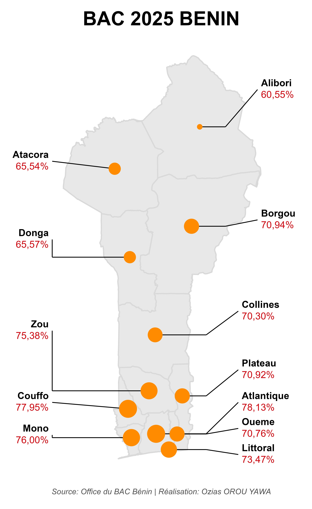

Ozias OROU YAWA
Géographe-Écologue | Expert SIG & R
Passionné par l'étude des écosystèmes forestiers tropicaux. J'applique l'analyse de données spatiales (SIG) et statistiques (R) pour décrypter l'impact des changements globaux sur la biodiversité.
Géographe-Écologue | Expert SIG & R
Passionné par l'étude des écosystèmes forestiers tropicaux. J'applique l'analyse de données spatiales (SIG) et statistiques (R) pour décrypter l'impact des changements globaux sur la biodiversité.
Université de Parakou, BJ | 2025 - 2026
Faculté d'Agronomie (FA)
Université de Parakou, BJ | 2019 - 2022
Spécialisation Géomatique et Biodiversité
Thesis: Fragmentation of the Monts-Kouffè Classified Forest.

Visualisation automatisée des taux de réussite par département à l'aide de R (`ggplot2`, `sf`) et production de cartes thématiques exportables.
R sf ggplot2
Étude de la sélection des matériaux de construction des nids par les fourmis tisserandes en réponse aux variations climatiques (POP-DYN Lab / NSF-IRES).
Recherche Statistiques R Terrain
Visualisation NMDS avec `Vegan`.
Municipalité de Kalalé | dragage de Yolla
Cartographie de l'état initial, analyse des impacts sur les ressources en eau et l'érosion.
NASSARA Consulting | Aménagement Pastoral
Développement de cartes thématiques pour couloirs de transhumance. Intégration données GPS.
Impact Plus Consulting | Risques Naturels
Mise à jour du Plan de Contingence Communal (Gogounou). Analyse vulnérabilité.